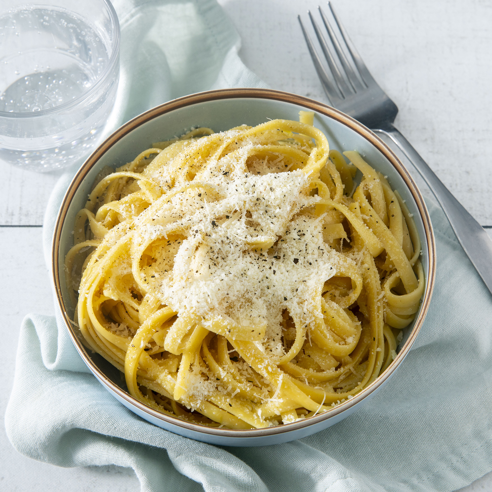

Home
Buttered Noodles

Description
You may be wondering: "Do I really need a recipe for buttered noodles?" The answer, of course, is yes. This kid-friendly recipe results in perfect noodles tossed in exactly the right amount of butter. Once you try these four-ingredient buttered noodles, you'll never go back to your old method again.
Ingredients
- 1 (16 ounce) package fettuccine noodles
- 6 tablespoons butter, cut into pieces
- ⅓ cup grated Parmesan cheese
- salt and ground black pepper to taste
Steps
- Fill a large pot with lightly salted water and bring to a rolling boil. Stir in fettuccine, bring back to a boil, and cook pasta over medium heat until tender yet firm to the bite, 8 to 10 minutes. Drain and return pasta to pot.
- Mix butter, Parmesan cheese, salt, and pepper into pasta until evenly combined.